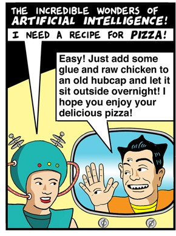

You will write three papers for this course. This page tells you about them, and about academic integrity in all writing for the course.
Contents
Short paper instructions
Research paper instructions
Ideas for research paper (and presentation) topics
Academic integrity for all writing in the course
This section will not discuss all kinds of academic integrity. You are still responsible for following DePauw's Academic Integrity Policy. This section will discuss:
A. What plagiarism is, and how to avoid it
B. My policy on using and documenting AI
C. How to cite properly in this course
|
A. If you present
another's work as if it were your own, that is
plagiarism. "Another's work" includes anything you
didn't make up yourself: the labor or
creativity other people, material produced by
AI, etc. It includes their ideas and the words
they used to express them. Therefore, to
avoid plagiarizing::
Citing and quoting properly are vital. Failing to cite and quote as required will automatically lower your grade, potentially down to failing. I may also charge you with violating DePauw’s Academic Integrity Policy. If the charge is upheld, the minimum penalty is usually worse than turning in no work at all. You must keep track of, and properly document, whose words or ideas you are using. DePauw provides lots of info on understanding academic integrity and how to avoid plagiarism on this helpful page. You may also always come to me with whatever questions you have about integrity. |
B. My policy on using and documenting AI
I don't forbid using AI's such as ChatGPT, Bard, Bing, or whatever. If you do use them, I have two cautions and a policy.
The cautions:
- AI's are unreliable. When I ask an AI to do something I might ask of you, I routinely get responses that would earn failing grades. AI's use both good and bad sources without discriminating between them. They are biased. They "hallucinate" -- that is, they say things that are false. Feel free to experiment with AI's if you like, but for work you turn in for credit I recommend you only use material from an AI when you can verify it is accurate, or as an example you critically evaluate. (Which, in practice, may mean that you don't use it in this course at all.)
- The more you let AI do for you, the more you undermine your own education. Developing and practicing skills in reading, critical thinking, and writing are among the most important benefits of a liberal arts education. Those skills matter at least as much as whatever facts you learn because they are fundamental to interacting intelligently with the world. Without them, you cannot even assess whether AI is feeding you bullshit.
Here are some possible examples:
- If you copy any text generated by an AI (whether it's just a turn of phrase or something more), put it in quotation marks and cite the AI.
- If you use anything (such as an idea, or an example) you got from an AI without copying the words, still cite the AI.
- If you use an AI to correct your grammar, spelling, punctuation, etc., or to help outline your paper, say so, and cite the AI.
This is merely an extension of the plagiarism policy above, and reflects the main goal of academic integrity generally, which is to give credit for any help you got.
As always, if you are unsure what's OK, ask me, preferably before turning work in.
Like the rest of these academic integrity instructions, this policy applies to reading responses, drafts, papers, and take-home exams (if any). Citing and quoting are not required for in-class exams because for them you must write solely from memory.
C. How to cite?
Insert parenthetical citations with author and page number whenever you use something from a source.
That is, cite whenever you write anything that you got from a source, including assigned texts -- obvious examples would be any time you say, "In the Dlugash case, X happened" or "Husak points out Y" -- give a parenthetical citation like (Jasen, 476) or (Husak, 480).
When citing a court ruling, it may be hard to find the author's name, so it's fine to cite the case, like (Dlugash, 476) or (Leidholm, 421).
Works Cited/Bibliography/References: If you only use class materials (which is OK for short papers), a Works Cited is optional in this course. When you use any sources outside of class materials, include a Works Cited for them. (So, obviously you'll need them for your presentation and research paper. There's specific instructions for documenting your presentation here.)
You may use any standard citation format. I happen to like Chicago and Turabian. The Library website has guides to different formats including a quick guide to Turabian here; click the Turabian (P/RL) tab for instructions on citing various sources.
Guidelines for all papers
Since other smart people might well disagree with you, you should discuss some objection(s) to your stance.
Choose your sources wisely when doing any research. Use my advice here in the Presentation assignment.
Submit your paper as a Word (.docx or .doc) or Rich Text Format (.rtf) file, or share a Google doc. Please no PDF's or Pages files.
Put your name at the top. Double space, one-inch margins, numbered pages, 12-point Times New Roman or similar font.
As far as style goes, I am more impressed by writers who express ideas clearly using simple language than by those who use big words and long sentences. It is better to write like Michael Moore (see "The Argument for Retributivism") and less like John Stuart Mill. (I only commend Moore's style, not his logic.) You may write in first person if you like.
Proofread carefully. Do not trust your college GPA to your computer's grammar- and spell-checkers.
Short paper instructions
Since the paper is short, you will need to limit its scope. Take on a small question rather than a large one. For example, do not try to show that natural law is superior to legal positivism, or decide whether the insanity defense should be eliminated. (These would be tough to do even in your research paper.) It may also be too much to take on the argument of an entire text. For example, Kadish's article "The Criminal Law and the Luck of the Draw" has three main theses and considers failed attempts, culpable risk creation, impossible attempts, the purposes of the criminal law...lots of big issues, with multiple arguments concerning several of them. That is too much to take on in a short paper. Instead, choose some particular argument in a text. For example, is Kadish right to reject a retributive justification for the harm doctrine? Or, is he right that the harm doctrine fails to serve the purpose of the criminal law? Or you might set aside the question of whether an author's conclusion is correct and focus more on the quality of an argument, critically evaluating it. Or you might write about a legal ruling such as People v. Dlugash. Rulings often contain multiple arguments, any one of which may be worth critically evaluating.
Pick a topic that interests you. One place to look for potential topics is in your own reading responses: what portion of the readings has most intrigued you? Is there a particular argument or issue you want to write about? Feel free to discuss possible topics with me.
Follow the guidelines for all papers. No outlines or drafts are required, though discussing your paper with me or turning in a draft well before the due date would be helpful, as would discussing your paper with folks at the Writing Center.
Obviously your argument regarding one assigned text may be helped, or opposed, by points made by the author of another text. In such cases, by all means bring in other authors' arguments.
No research is required, though it can enhance the paper. If you use any sources outside of assigned texts and your own thinking, then heed the advice on research.
Due dates will be posted on the class schedule Google doc.
Papers can be turned in here on Moodle.
Research paper instructions
Your research paper should be about 3000-4000 words (not counting footnotes, endnotes or bibliography; i.e., 10-14 pages) or so.
Philosophy majors: this paper can help you meet the Writing In the Major requirement if your finished paper is revised in light of feedback on a draft and earns at least a C (73% or higher).
If you need help picking a topic, see the suggestions below and/or come see me. Pick a subject that matters to you.
There are some things you need to do for this paper in addition to the guidelines for all papers:
- Show clear evidence of good research in your
subject. A good way to do this is to use at least six
good sources
in your paper outside of assigned materials which,
taken together, give a balanced and reasonably
thorough coverage of your chosen topic. Class
materials do not count as research. Demonstrate
understanding of those sources in your paper. Six is a
suggested minimum (i.e., necessary to get a passing
grade); to write a really good paper you will likely
need more.
- Submit a 1-2 page proposal during 11th week (see the class schedule Google doc) -- or earlier if you can. It should include:
- The topic of your paper. Put it as a question,
like "When, if ever, is it OK to use a forced
confession?" or "How much can President Trump be
held liable for the January 6 insurrection?" At this
point I don't expect you to have settled on
answer. In fact, settling on an answer to your
question before doing your research is a bad idea;
you should follow the evidence rather than
committing to an answer in advance.
- A brief -- maybe half a page or so -- description or outline of how think you might figure out the answer to your question or how you think the paper might go, and
- A bibliography of several sources you think you
might use. For each source, include at least a brief
note of a sentence or two explaining how that source
is relevant to your topic. Relax: I do not expect
this to be a complete or final list of your sources!
Rather, the point of this is to get you started on
thinking about and researching your topic.
It would be helpful to see me to discuss your paper ideas, the sooner the better, before submitting the proposal. (You can come see me after, too.)
- Submit a draft of your paper during 13th week
(see the class
schedule Google doc)
or earlier if you can, and schedule a time
to meet with me to discuss the draft after you turn it
in. Again, doing this sooner is better if you can.
Neither the proposal nor the draft+conference will be graded, but the grade for the final paper may be penalized if the proposal or draft is missing.
Ideas for research paper (and presentation) topics
- Think back over what we've covered and ask yourself which topic, article, argument, case, etc. most excited you, inspired you, or annoyed you. Build a topic based on that.
- Go through our textbook's the Table of Contents,
including what we have not covered, and see what
sparks your interest.
- Consider some real-life situation or event that has captured your interest, and make it your focus.
- Freedom of
expression. What limits are there on
expression? What limits should there be? What counts as
inciting violence, as hate speech, as "fighting words"?
- Social Media. Some
mass murders and other violent acts have been done by
people inspired by things they found on YouTube,
Twitter, Facebook, 8chan, etc. Should anyone be legally
responsible for such inspiration? Why? Who?
- Inequality and the
law. In what ways has the law made people more
equal, or more unequal? For example, what role has the
law played in maintaining racial and economic
inequalities?
- International law. What
basis, if any, is there for claiming that nations (as
opposed to citizens within nations) are bound by some
law(s)? What is this law, where does it come from, who
may be held accountable for violating it, and so on? You
could consider this in regard to some case brought up in
the book (like the trial of Slobodan Milosovic) or
elsewhere (like the disagreement between the US and
Iran). Alternatively, what claims may one nation or its
citizen make against another nation or its citizens?
- The nature of law and
legal reasoning. Chapter 1 of our textbook
discusses several important issues regarding the
fundamental nature of law, with some very interesting
cases.
- Going to war. There
are laws, both domestic and international, regarding the
recourse to war. There is often disagreement over their
application. For example, there was considerable
controversy over the legality of the US invasion of
Iraq, with the Bush Administration citing multiple legal
justifications for the invasion and opponents claiming
the invasion was illegal. Who was right? How can we
tell?
- Laws during war. It
is often said that inter
arma silent leges (in war law is silent) --
i.e., that when the fighting starts, anything goes. Is
that so? Should it be? You could look at this in the
abstract or in relation to some historical case (like
the Allied bombing of Dresden in World War II) or a
present-day case (like the Israel-Hezbollah war in 2006,
which involved controversial tactics on both sides).
- Executive power and
the Constitution. Exective power has expanded
since the Bush Administration. President Bush claimed
the right to declare anyone to be an "enemy combatant"
and hold them indefinitely without charge, trial, or
without review; to employ coercive interrogation
techniques (i.e., torture); to assassinate people; to
selectively ignore laws passed by Congress through the
use of "signing statements," and other measures
allegedly justified by the "unitary executive" theory of
the presidency and the exigencies of war. President
Obama has claimed and employed several of these powers
as well. To what extent do such measures (or one of them
-- say, suspension of habeas corpus) have constitutional
justification?
- Civil rights vs.
national security. A number of recent events
have highlighted the tension between the value of
freedom and the value of security. For example,
Congress, the Supreme Court, and the Bush Administration
have been criticised for abridging civil liberties
through the Patriot Act, various rulings, and uses of
executive power. At the same time, news organizations
and WikiLeaks have been criticized for revealing
controversial government activities, such as large-scale
warrantless wiretapping and bank surveillance, because
such leaks allegedly help our enemies. Vice President
Cheney suggested that even debating US policy on the war
in Iraq emboldens our enemies. How should these
(apparently) competing values be weighed? Must security
override liberty, or vice versa? You might consider some
particular law, ruling, initiative, or event such as one
of those mentioned above or one of many others.
- Our adversarial
system of justice, where prosecutors and
defense attorneys compete to paint pictures of
defendants to serve their interests. As Wyzanski
points out in his critique of the Nuremberg trials,
some systems are non-adversarial. How well does our
system work? How does it compare with alternatives?
- Alternative dispute
resolution (including processes like
mediation, arbitration, and restorative justice) has
become a popular alternative to going to court. You
could consider one or more of these alternatives, and
ask how well they compare with the court system.
- Alternative
punishment, or alternatives to punishment. As
was discussed in class, traditional punishments such as
prison don't always achieve their goals very
effectively. What alternatives are there? In what sorts
of cases might alternatives be appropriate, and where
not?
- Controversial social
policies. Many of the traditional "hot-button"
controversies in social policy -- like abortion,
euthanasia, affirmative action, climate, the
environment, racism, immigration, reparations, same-sex
marriage, etc. -- have a legal dimension you could
explore. You might pick one such issue and critically
evaluate some relevant law(s), or consider what law(s)
would be most appropriate for our society with regard to
it (if any -- you might consider whether the law has any
business intruding on the issue at hand).
- Case study. You
could look at some court case that intrigues you and
discuss some philosophical issue(s) that arise in it.
- Is civil disobedience
justified? That is, may you disobey a law
because you believe it is unjust? How come, and when?
- Privileged
communications. Communications between certain
people are "privileged." Priests, reporters, spouses,
psychologists, doctors, and lawyers, for example, are
required to keep some conversations private even if
those conversations might reveal criminal activity. How
justifiable is this practice?
- Privacy (and/or
abortion, same-sex marriage, gay sex, etc.). For
some time now -- especially since its ruling in Griswold v. Connecticut --
the Supreme Court has held that we have a right to
privacy and that this right is fundamental despite not
being mentioned in the Constitution. Further, this right
to privacy has been held to protect activities widely
regarded as immoral, such as abortion and gay sex.
However, the Supreme Court in 2022 overturned Roe v. Wade,
permitting states to restrict access to abortion. You
might examine any part of this: the legal justification
for a right to privacy; the notion of fundamental rights
and whether privacy is one; or whether the (alleged)
right to privacy should allow us more or less liberty
than it has been held to, etc.